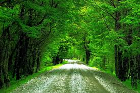

Trees and plants.

The environment is built up on trees and plants, including the atmosphere as it includes oxygen, and keeps us alive, as we cut it down, we ruin the environment, as animals nest in it, store food in it, and bees won't be able to pollinate. Flooding can happen because roots can't store water anymore. All because a dude decided: Hey, what if I cut down this tree, knowing that trees too, live, and then timber. And the tree joined the Titanic. Anyways, we should protect the trees and NOT mercilessly kill it with our own two or three (as many as you have) hands. Join the plant gang for anti timber.